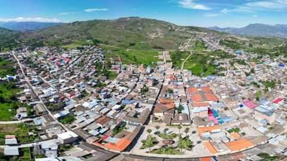
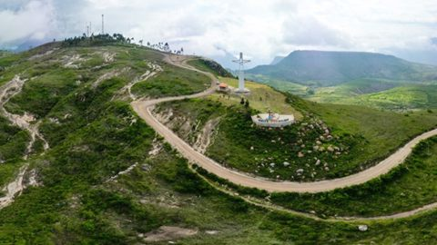
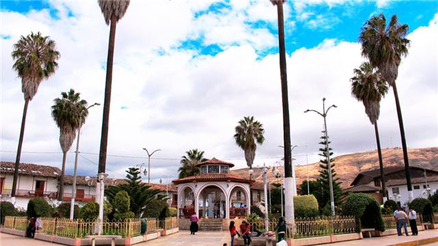
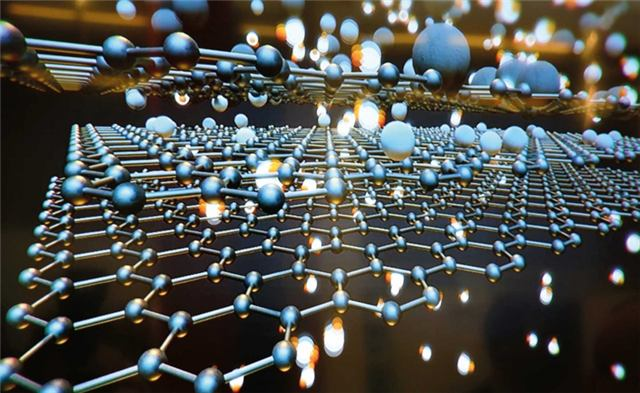
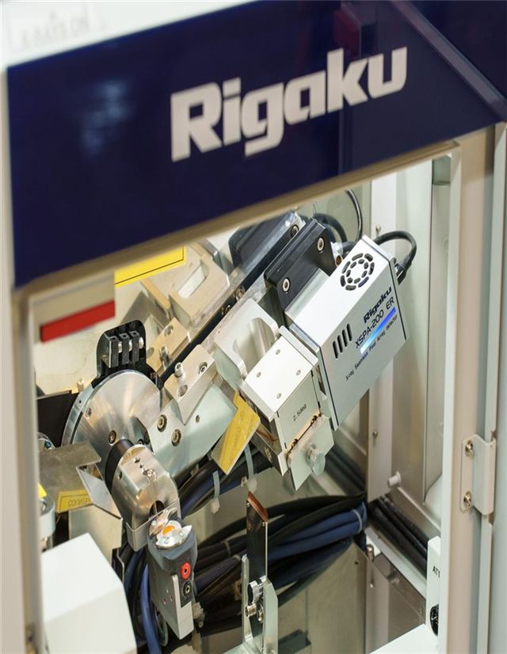
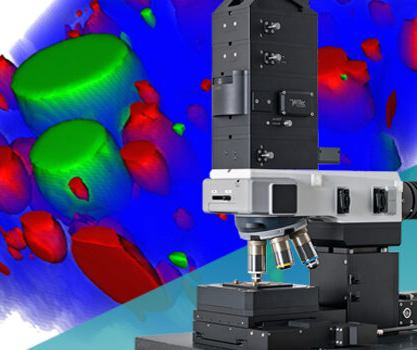
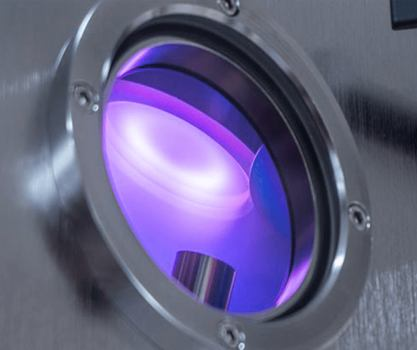
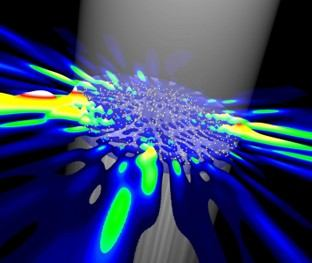

All Santa Cruz Lab & research
Santa Cruz in 360°
My hometown, Santa Cruz de Succhabamba (Cajamarca, Peru), seen from the air. Drag the image to look in every direction, use + and − to zoom and the full-screen button for a better view.
Santa Cruz de Succhabamba
360° photos: Robert Marx

The town 
Cerro Cotorumi
Photos

Santa Cruz de Succhabamba My hometown · Cajamarca, Peru
Patron saint A Santa Cruz tradition

Nanomaterials Structures with at least one dimension between 1 and 100 nm

X-ray diffraction Crystal structure from the diffraction pattern

Raman spectroscopy A material's vibrational fingerprint

Magnetron sputtering Thin-film deposition with a plasma

Random lasing Light amplified by multiple scattering, no mirrors